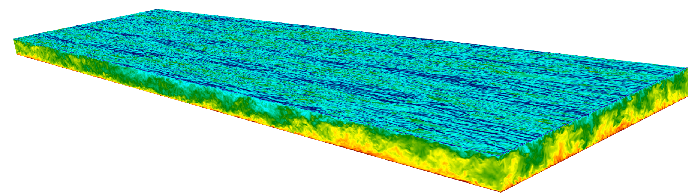

Instantaneous Flow Field (Mw = 1.5, Rew = 10,000)

High-fidelity compressible turbulent plane Couette flow at multiple Reynolds and Mach numbers.

Multiple high-fidelity direct numerical simulation cases of compressible turbulent plane Couette flow are provided. All cases use periodic boundary conditions in the streamwise and spanwise directions and no-slip, isothermal walls.
| Case | Mw | Rew | Reτ | Reτc* | Lx/h | Lz/h | Nx × Ny × Nz | Δx+ | Δz+ | Δy+wall, center |
|---|---|---|---|---|---|---|---|---|---|---|
| R2KM08 | 0.8 | 1500 | 96.4 | 86.0 | 24π | 6π | 768 × 129 × 384 | 9.5 | 4.7 | 0.22, 3.15 |
| R4KM08 | 0.8 | 4000 | 228.4 | 202.3 | 24π | 6π | 1536 × 193 × 768 | 11.2 | 5.6 | 0.36, 4.93 |
| R10KM08 | 0.8 | 10000 | 515.9 | 456.4 | 24π | 6π | 3072 × 257 × 1536 | 12.6 | 6.3 | 0.60, 8.36 |
| R2KM15 | 1.5 | 1500 | 104.9 | 72.6 | 24π | 6π | 768 × 129 × 384 | 10.3 | 5.1 | 0.25, 3.40 |
| R4KM15 | 1.5 | 4000 | 251.5 | 172.2 | 24π | 6π | 1536 × 193 × 768 | 12.3 | 6.2 | 0.39, 5.44 |
| R10KM15 | 1.5 | 10000 | 571.4 | 389.8 | 24π | 6π | 3072 × 257 × 1536 | 14.0 | 7.0 | 0.66, 9.26 |
| R4KM30 | 3.0 | 4000 | 327.2 | 113.7 | 24π | 6π | 1536 × 193 × 768 | 16.0 | 8.0 | 0.51, 7.07 |
| R4KM50 | 5.0 | 4000 | 464.2 | 74.3 | 24π | 6π | 2048 × 193 × 1024 | 17.0 | 8.5 | 0.72, 10.02 |
Mw: wall Mach number; Rew: wall Reynolds number; Reτ: friction Reynolds number; Reτc*: centerline semilocal friction Reynolds number; h: half-height of channel. All listed cases use Ly = 2h.